3D tic tac toe was a game-jam concept that me and a few friends came up with. We each implemented the idea in our own platform and language. This was my interpretation of the game. The whole project only took a few days to build.
Link3D tic tac toe was a game-jam concept that me and a few friends came up with. We each implemented the idea in our own platform and language. This was my interpretation of the game. The whole project only took a few days to build.
LinkThe chess.express domain is a typical online chess game platform. My goal was to let people play chess online with their friends without having to signup for anything. The end result is fully functional, complete with an in-app messaging system.
LinkWave.js stemmed from a lack of resources in the area of audio visualization in web development. I took it upon myself to build a library that takes in audio, and produces different effects to a canvas element. The original goal was to use this feature in another one my apps that I was making at the time.
LinkPlay chess online with your friends, or with random opponents.
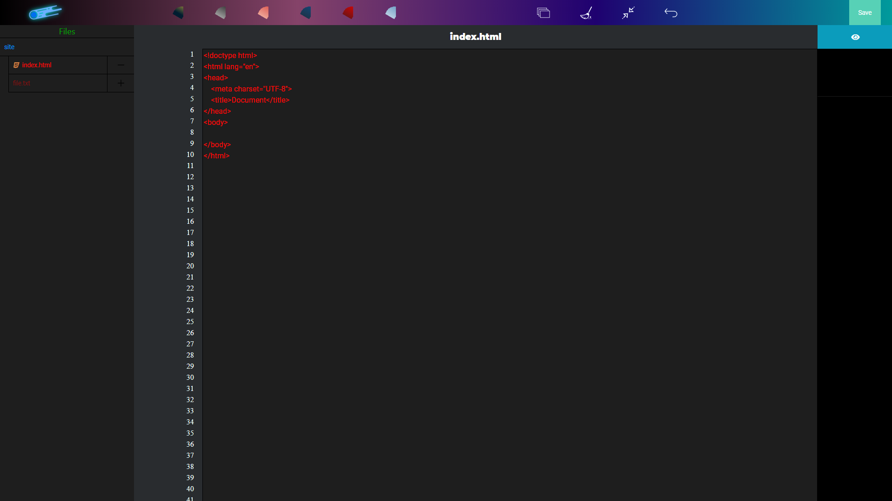Online front-end text editor, create a website without downloading any software.
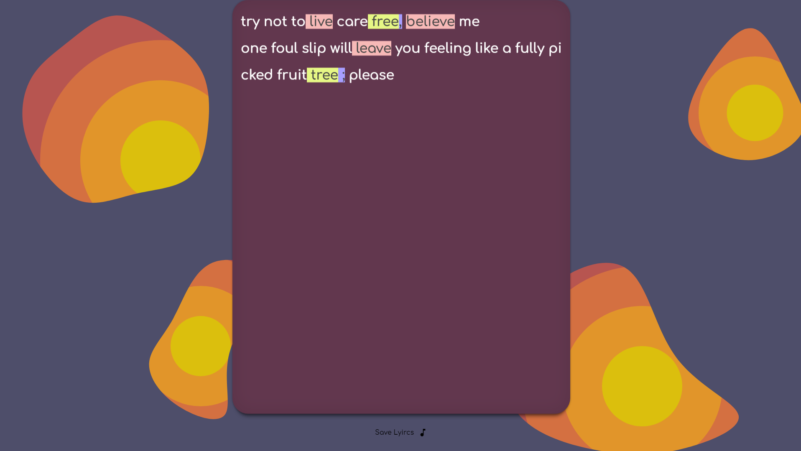AI assisted lyrics making tool.
Transfer data across the internet.
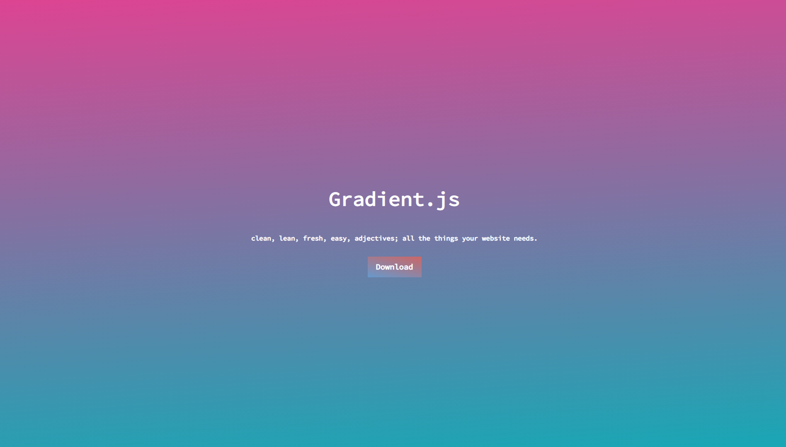Create dynamic gradients with this javascript gradient library.
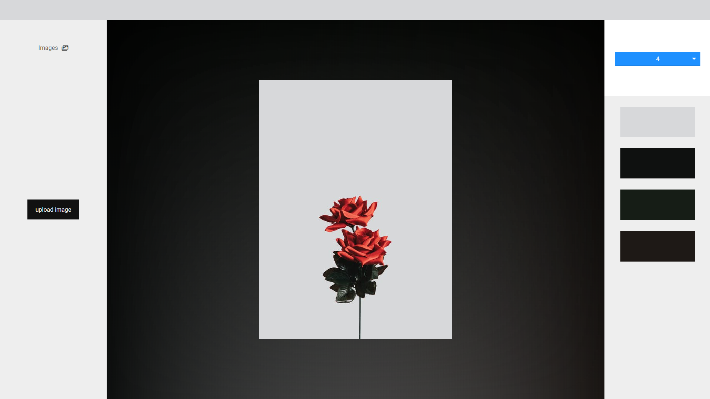Pick out the main colors from any image with this image parser tool.
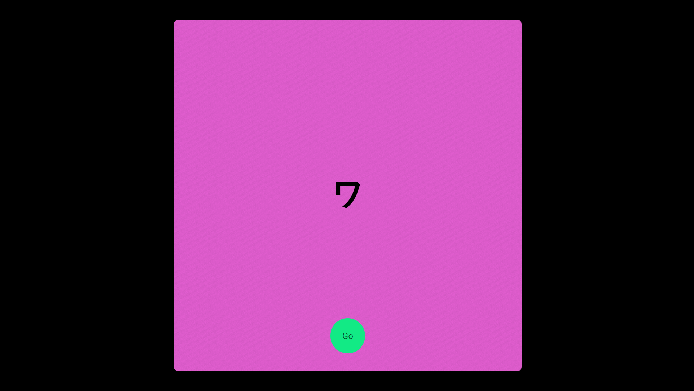Learn japanese with this flashcards game.
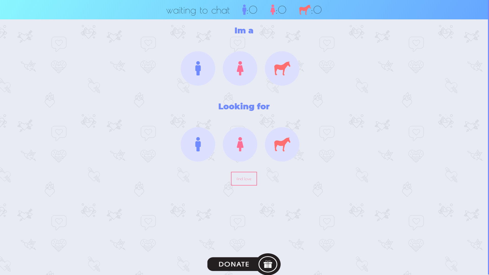Video chat with random singles from around the world.
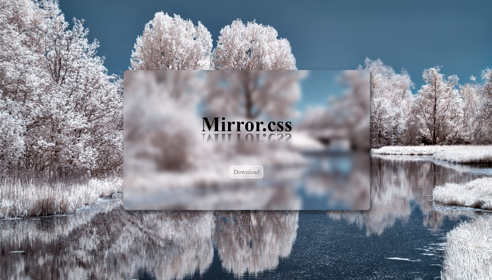A library dedicated to mirror and reflective effects with css.
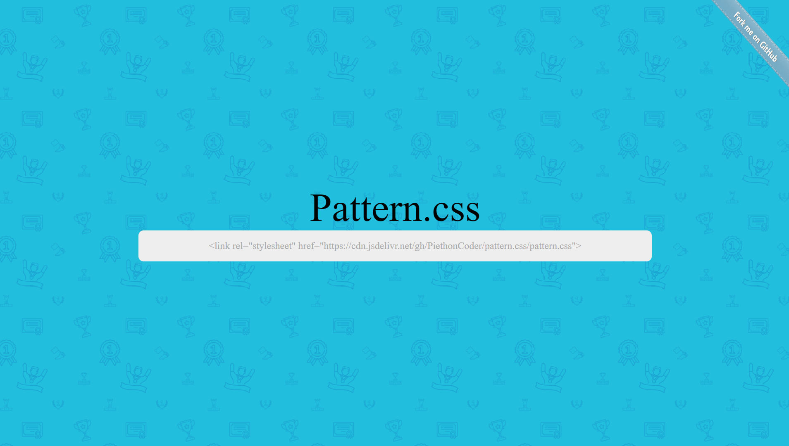Import background patterns into your website with this css library.
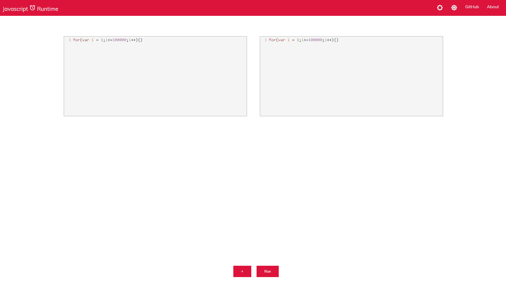Track how fast your javascript algorithm is.
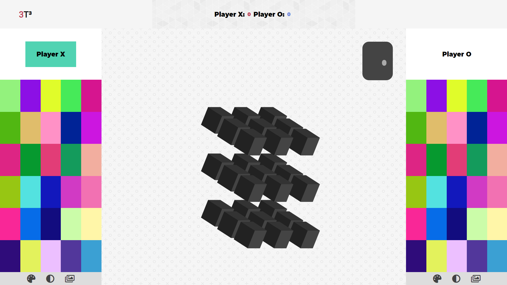Three dimensional tic-tac-toe, a classic game revamped.
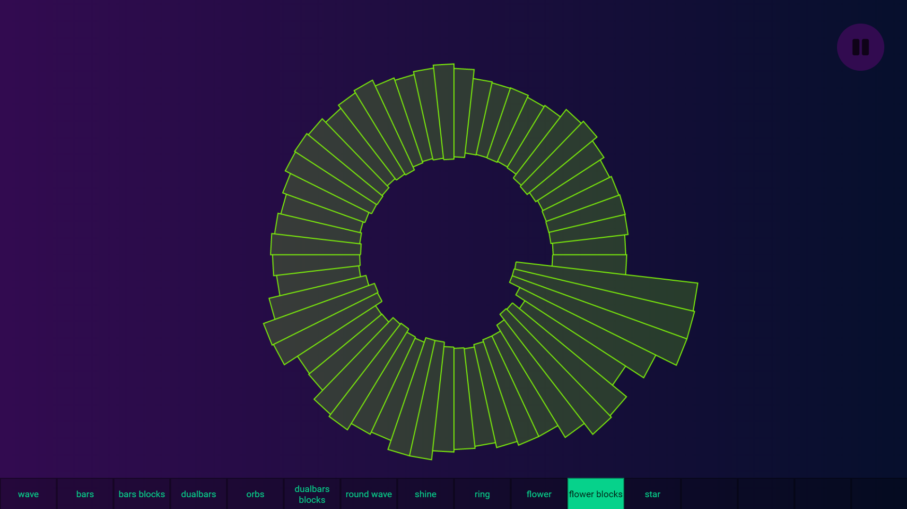Inject audio visualizations into your website with this javascript framework.
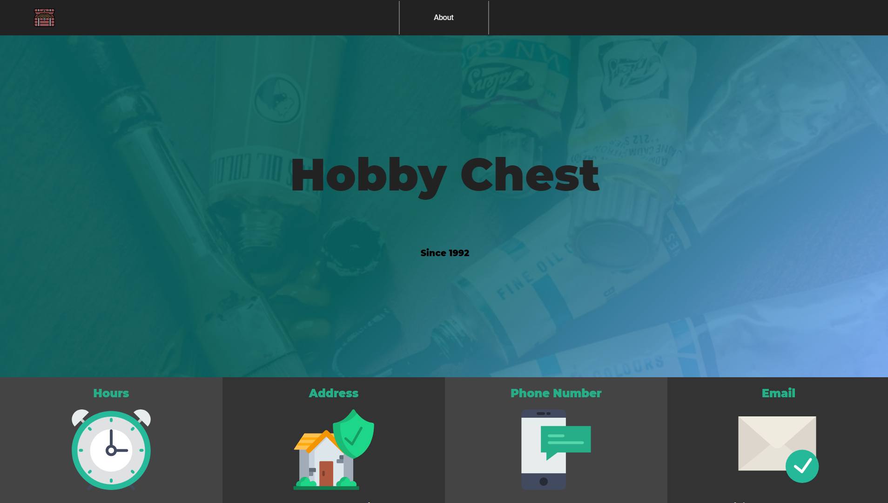Small local hobby shop in the NC area.
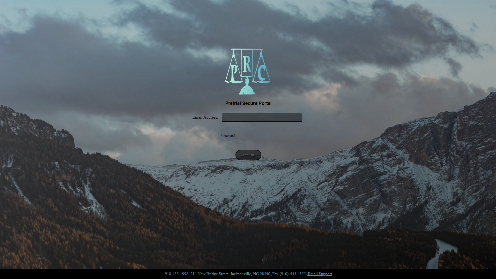Deferred Prosecution.
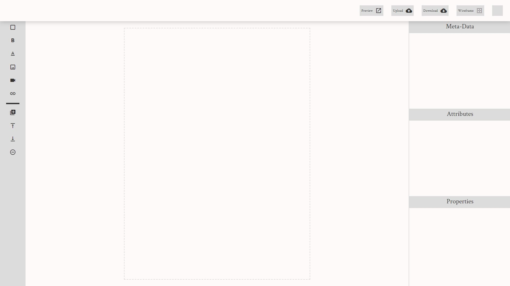Free website builder. Want to build a website but with the speed and convenance of a gui? Use Pluto.
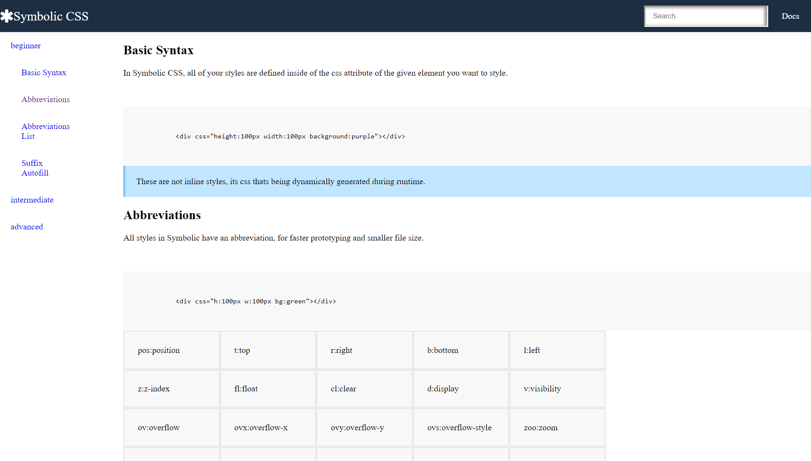The next generation of CSS frameworks.

After high school I went to college for about 3 years for computer programming. I didn't have much money, so I went to a small community college. Throughout college I learn the basics of ~10 languages. Python, C#, C++, COBOL, Visual Basic, Java ect. I went through the process of looking for a language that suited me best. Thats when I eventually settled on web development. Web development really stood out because of its GUI toolkit. Creating interfaces for python or java apps was a multi-threaded mess. Which as most people know html & css is very easy to pick up. Although it wasn't the fact that it was easy that drew me in. It was currently just the best tool for the job. During my time at college I did some freelance web development for several small local businesses. Mostly working in PHP and with mySQL databases. Those experience really crystallized the idea that I could become a web developer. After College I joined a web development technical school called lambda school. Where I studied React and node.js and updated my skills a bit.